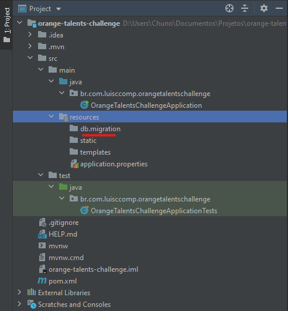
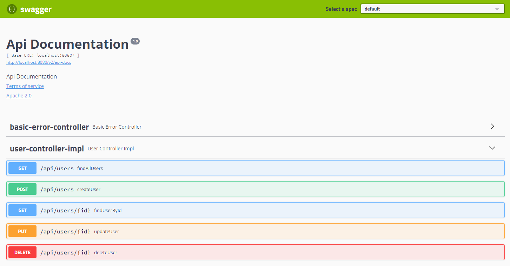

Nessa publicação vou explicar como implementar um sistema de controle de aplicação de vacinas utilizando Spring e Hibernate, mas atenção: esse não será um tutorial de programação, mas sim um texto explicando como implementar um sistema de aplicação de vacinas com Spring, quais tecnologias eu utilizaria para implementar o sistema e algumas dicas de como eu faria. Sem mais delongas, introduzirei a lista de tecnologias do Spring utilizadas no Projeto. Para desenvolver esse projeto estou utilizando Java 14.
Para esse projeto utilizarei as seguintes tecnologias para o seu desenvolvimento (além do Spring + Hibernate):
O Spring é um framework desenvolvido e mantido (até o momento onde este texto foi escrito) pela Pivotal. De forma simplificada, o objetivo do Spring é prover aos desenvolvedores todo um conjunto de ferramentas que auxiliem no desenvolvimento de aplicações Web utilizando Java ou outras linguagens suportadas pelo framework compatíveis com a Máquina Virtual Java (JVM).
Provê recursos e ferramentas para desenvolvimento de aplicações web MVC e de APIs REST.
O DevTools é uma dependência opcional neste projeto, porém ele oferece recursos bastante úteis no desenvolvimento de aplicações web como, por exemplo, o recurso de LiveReload que reinicia a aplicação toda vez que uma mudança é feita em alguma parte do código.
Validation é a implementação do Hibernate para as Bean Validations do Jakarta EE. Bean Validations são espeficações definidas para validações que asseguram que as propriedades de uma classe respeitem algumas restrições. Algumas validações presentes nessa especificação são @Email , @NotNull, @NotBlank, entre outras validações que são citadas na documentação oficial da especificação [1].
O Spring Data JPA é um projeto dentro da família Spring que facilita o desenvolvimento de repositórios utilizando o JPA (Jakarta Persistence API) [2]. Vale ressaltar que o Spring Data JPA não é uma implementação do JPA, mas sim uma abstração que facilita a criação de repositórios utilizando JPA. O JPA, assim como as Bean Validations são um conjunto de especificações que descrevem funcionalidades comuns que devem ser implementadas por frameworks de persistência de dados. As implementações mais conhecidas do JPA são o Hibernate, Apache Open JPA e Eclipse Link.
O driver MySQL é uma biblioteca que permite que nossa aplicação se comunique e se conecte com banco de dados MySQL. Existem específicos para outros bancos de dados relacionais: Postgres, SQL Server, Maria DB, Oracle.
Uma funcionalidade bastante útil do Hibernate, que é bastante utilizada pelos desenvolvedores, é a possibilidade de gerar o banco de dados da aplicação apenas "olhando" para as classes do projeto. Apesar de útil, esse recurso pode ser perigoso se não for bem utilizado. Por outro lado, as vezes é necessário guardar na aplicação um histórico de todas as alterações feitas no banco de dados durante o processo de desenvolvimento da aplicação. Quais colunas foram adicionadas/removidas de uma tabela, quais foram as novas tabelas criadas, etc. Esse processo de criar um histórico de modificações no banco de dados se chama Migration.
Será desenvolvida uma API REST que precisa controlar a aplicação de vacinas entre a população brasileira. O primeiro passo deve ser a construção de um cadastro de usuários, sendo obrigatórios dados como: nome, e-mail, CPF e data de nascimento, onde e-mail e CPF devem ser únicos. O segundo passo é criar um cadastro de aplicação de vacinas, sendo obrigatórios dados como: nome da vacina, o id do usuário e a data que foi realizada a vacina. Caso os cadastros estejam corretos, é necessário voltar o Status 201, caso hajam erros de preenchimento de dados, o Status deve ser 400. Apenas dois endpoints serão implementados nesse sistema.
Nessa seção serão abordadas as abordagens que costumo utilizar para o desenvolvimento de projetos Spring e algumas boas práticas.
Após a criação de um projeto Spring com Flyway ele vai ter a seguinte estrutura de diretório:

Figura 1: estrutura inicial do projeto recém criado.
Todas as migrações do projeto serão incluidas na pasta db/migration para que possamos armazenar o histórico de mudanças no banco de dados. As migrações serão armazenadas utilizando a estrutura V[número da versão]__nome-da-migration.sql.
Começarei pela modelagem de dados. Revisitando as especificações do projeto, é possível notar algumas informações bem úteis referentes aos dados do usuário e das vacinas. Baseado na descrição, é possível extrair dali uma forma de representar os dados do problema em forma de tabela em um banco de dados relacional. Abaixo, seria como eu faria a minha tabela e os seus devidos relacionamentos com o usuário. A criação das tabelas foram separadas em dois scripts separados sendo cada um responsável por lidar com suas respectivas tabelas.
xxxxxxxxxxCREATE TABLE users ( id BIGINT NOT NULL AUTO_INCREMENT, name VARCHAR(255) NOT NULL, cpf VARCHAR(11) NOT NULL UNIQUE, email VARCHAR(255) NOT NULL UNIQUE, birthdate DATE NOT NULL, CONSTRAINT users_pk PRIMARY KEY (id));CREATE TABLE vaccines ( id BIGINT NOT NULL AUTO_INCREMENT, name VARCHAR(255) NOT NULL, realization_date DATE NOT NULL, user_id BIGINT NOT NULL, CONSTRAINT vaccines_pk PRIMARY KEY (id), CONSTRAINT vaccines_fk_users FOREIGN KEY (user_id) REFERENCES users(id));Vou começar apresentando as entidades do projeto. Conforme o código SQL apresentado anteriormente, decidi implementar as entidades da seguinte forma: uma vacina não pode existir sem um usuário, o que indica que a vacina é uma entidade fraca no nosso relacionamento. As entidades serão anotadas com uma anotação chamada @Entity para indicar que a classe em questão é uma entidade do banco, uma anotação @Table para indicar a tabela que ela se refere e seus atributos com @Column para mapeá-los para suas respectivas colunas. A estratégia IDENTITY apenas informa ao SGBD que a chave primaria é uma coluna auto_increment e nem todos os bancos de dados podem suportar essa opção. A chave primária é anotada com @Id e seu valor é incrementado automáticamente, conforme a estratégia de geração atribuída a ela. A partir do código SQL, as classes que representaram essas entidades respectivamente são:
Implementação da entidade Usuário:
xxxxxxxxxxpackage br.com.luisccomp.orangetalentschallenge.domain.model.entity;// ... imports ...(name = "users")public class User { (strategy = GenerationType.IDENTITY) (name = "id", nullable = false) private Long id; (name = "name", nullable = false) private String name; (name = "cpf", nullable = false, unique = true, length = 11) private String cpf; (name = "email", nullable = false, unique = true) private String email; (name = "birthdate") private LocalDate birthdate; (cascade = CascadeType.ALL, fetch = FetchType.LAZY) (name = "user_id") private List<Vaccine> vaccines; public User() { } public User(Long id, String name, String cpf, String email, LocalDate birthdate) { this.id = id; this.name = name; this.cpf = cpf; this.email = email; this.birthdate = birthdate; } // ... getters e setters ... public boolean equals(Object o) { if (this == o) return true; if (o == null || getClass() != o.getClass()) return false; User user = (User) o; return Objects.equals(id, user.id); } public int hashCode() { return Objects.hash(id); }}Implementação da entidade Vacina:
xxxxxxxxxxpackage br.com.luisccomp.orangetalentschallenge.domain.model.entity;// ... imports ...(name = "vaccines")public class Vaccine { (strategy = GenerationType.IDENTITY) (name = "id", nullable = false) private Long id; (name = "name", nullable = false) private String name; (name = "realization_date", nullable = false) private LocalDate realizationDate; (cascade = CascadeType.ALL, fetch = FetchType.LAZY) private User user; public Vaccine() { } public Vaccine(Long id, String name, LocalDate realizationDate, User user) { this.id = id; this.name = name; this.realizationDate = realizationDate; this.user = user; } // ... getters e setters ... public boolean equals(Object o) { if (this == o) return true; if (o == null || getClass() != o.getClass()) return false; Vaccine vaccine = (Vaccine) o; return Objects.equals(id, vaccine.id); } public int hashCode() { return Objects.hash(id); }}Durante o funcionamento da aplicação, comportamentos inesperados podem ocorrer como, por exemplo, envio de dados inválidos para um determinado campo na hora do cadastro de usuário ou vacina. As exceptions criadas para lidar com esses erros foram implementadas a partir de uma classe Base conforme indicado no código a seguir:
xxxxxxxxxxpackage br.com.luisccomp.orangetalentschallenge.exception;import org.springframework.http.HttpStatus;public abstract class BaseHttpException extends RuntimeException { private final HttpStatus status; private final Object details; public BaseHttpException(String message, HttpStatus status, Object details) { super(message); this.status = status; this.details = details; } public HttpStatus getStatus() { return status; } public Object getDetails() { return details; }}Sempre que a requisição possuir algum dado inválido, essa exceção será lançada:
xxxxxxxxxxpackage br.com.luisccomp.orangetalentschallenge.exception;import org.springframework.http.HttpStatus;public class BadRequestException extends BaseHttpException { public BadRequestException(String message, Object details) { super(message, HttpStatus.BAD_REQUEST, details); } public BadRequestException(String message) { super(message, HttpStatus.BAD_REQUEST, null); }}E sempre que um determinado recurso que o usuário deseja buscar não existir, essa exceção será lançada:
xxxxxxxxxxpackage br.com.luisccomp.orangetalentschallenge.exception;import org.springframework.http.HttpStatus;import org.springframework.web.bind.annotation.ResponseStatus;(HttpStatus.NOT_FOUND)public class NotFoundException extends BaseHttpException { public NotFoundException(String message, Object details) { super(message, HttpStatus.NOT_FOUND, details); } public NotFoundException(String message) { super(message, HttpStatus.NOT_FOUND, null); }}Também criei uma classe para armazenar dados para respostas personalizadas de erro e que sejam mais legíveis para o usuário que está consumindo a API ler, contendo apenas o essencial:
xxxxxxxxxxpackage br.com.luisccomp.orangetalentschallenge.domain.model.response;import com.fasterxml.jackson.annotation.JsonProperty;import com.fasterxml.jackson.annotation.JsonPropertyOrder;({"status", "message", "details"})public class ErrorResponse { ("status") private Integer status; ("message") private String message; ("details") private Object details; public ErrorResponse() { } public ErrorResponse(Integer status, String message, Object details) { this.status = status; this.message = message; this.details = details; } ({"field", "error"}) public static class FieldErrorDetails { ("field") private String field; ("error") private String error; public FieldErrorDetails() { } public FieldErrorDetails(String field, String error) { this.field = field; this.error = error; } // ... getters e setters ... } // ... getters e setters ...}Por fim, uma classe anotada como @RestControllerAdvice, tornando-a elegível para captura e tratamento de exceptions geradas durante o tempo de execução da aplicação:
xxxxxxxxxxpackage br.com.luisccomp.orangetalentschallenge.exception;import br.com.luisccomp.orangetalentschallenge.domain.model.response.ErrorResponse;import java.util.stream.Collectors;import org.springframework.http.HttpHeaders;import org.springframework.http.HttpStatus;import org.springframework.http.ResponseEntity;import org.springframework.validation.FieldError;import org.springframework.web.bind.MethodArgumentNotValidException;import org.springframework.web.bind.annotation.ExceptionHandler;import org.springframework.web.bind.annotation.RestControllerAdvice;import org.springframework.web.context.request.WebRequest;import org.springframework.web.servlet.mvc.method.annotation.ResponseEntityExceptionHandler;public class GlobalExceptionHandler extends ResponseEntityExceptionHandler { (BaseHttpException.class) public ResponseEntity<Object> handleBaseHttpException(BaseHttpException ex, WebRequest request) { var response = new ErrorResponse(ex.getStatus().value(), ex.getMessage(), ex.getDetails()); return handleExceptionInternal(ex, response, new HttpHeaders(), ex.getStatus(), request); } protected ResponseEntity<Object> handleMethodArgumentNotValid(MethodArgumentNotValidException ex, HttpHeaders headers, HttpStatus status, WebRequest request) { var details = ex.getBindingResult() .getAllErrors() .stream() .map(error -> new ErrorResponse.FieldErrorDetails(((FieldError) error).getField(), error.getDefaultMessage())) .collect(Collectors.toList()); var response = new ErrorResponse(status.value(), "Validation failed for one or more fields", details); return handleExceptionInternal(ex, response, headers, status, request); }}Como o Spring Framework é um Framework construindo em cima dos princípios de inversão de cotrole (IoC) e injeção de dependências, as vezes precisamos informar ao Framework que desejamos que um determinada instância de uma classe seja passível de ser injetado onde são requeridos. Aqui vou criar uma classe de configuração para o pacote Jackson onde eu retorno uma instância customizada de um objeto ObjectMapper configurada para as necessidades do projeto:
xxxxxxxxxxpackage br.com.luisccomp.orangetalentschallenge.core.configuration;import com.fasterxml.jackson.databind.DeserializationFeature;import com.fasterxml.jackson.databind.ObjectMapper;import com.fasterxml.jackson.databind.SerializationFeature;import com.fasterxml.jackson.datatype.jsr310.JavaTimeModule;import org.springframework.context.annotation.Bean;import org.springframework.context.annotation.Configuration;public class JacksonConfiguration { public ObjectMapper objectMapper() { return new ObjectMapper() // PROPRIEDADES NÃO MAPEADAS não quebram .configure(DeserializationFeature.FAIL_ON_UNKNOWN_PROPERTIES, false) // NÃO FALHA SE ALGUMA PROPRIEDADE ESTIVER VAZIA .configure(SerializationFeature.FAIL_ON_EMPTY_BEANS, false) // SERVE Para compatibilidade de arrays, quando tem um array com um item, caso não tenha, essa config // se perde. .enable(DeserializationFeature.ACCEPT_SINGLE_VALUE_AS_ARRAY) // Determina se datas devem ser mapeadas para timestamps em formato array numérico (true) ou se devem // ser convertidas para texto (false) .configure(SerializationFeature.WRITE_DATES_AS_TIMESTAMPS, false) // Serializa datas .registerModule(new JavaTimeModule()); }}Criado a classe de configuração, hora de criar um componente para mapeamento de objetos. O objetivo desse componente (que também será elegível para injeção de dependência) é reduzir a quantidade de getters e setters no código, deixando a invocação dos mesmos apenas quando necessário. Por questões de boas práticas, farei uso de interfaces para evitar o acoplamento do código com uma instância em específico, tornando possível a troca da classe de mapeamento. Com poucas alterações, é possível utilizar outras bibliotecas, como ModelMapper, por exemplo.
xxxxxxxxxxpackage br.com.luisccomp.orangetalentschallenge.core.mapper;public interface ClassMapper { <T, U> U map(T object, Class<U> target);}xxxxxxxxxxpackage br.com.luisccomp.orangetalentschallenge.core.mapper;import com.fasterxml.jackson.databind.ObjectMapper;import org.springframework.beans.factory.annotation.Autowired;import org.springframework.stereotype.Component;public class ObjectMapperClassMapper implements ClassMapper { private final ObjectMapper objectMapper; public ObjectMapperClassMapper(ObjectMapper objectMapper) { this.objectMapper = objectMapper; } public <T, U> U map(T object, Class<U> target) { return objectMapper.convertValue(object, target); }}Os passos para a implementação do endpoint de usuários será feito da seguinte forma: repositório, serviços e controller. Não vou lidar diretamente com as classe, mas sim com classes cujo propósito é guardar dados (DTOs, VO ou ViewModel). As classes responsáveis por armazenar os dados de requisição e resposta dos usuários erão UserRequestDTO e UserResponseDTO.
Nessa classe faço uso dos validators. Eles servem para validar se as propriedades da requisição são válidos antes de serem passados adiante pela controller.
xxxxxxxxxxpackage br.com.luisccomp.orangetalentschallenge.domain.model.request;import com.fasterxml.jackson.annotation.JsonProperty;import java.time.LocalDate;import javax.persistence.Temporal;import javax.persistence.TemporalType;import javax.validation.constraints.Email;import javax.validation.constraints.NotBlank;import javax.validation.constraints.NotEmpty;import javax.validation.constraints.NotNull;import org.hibernate.validator.constraints.br.CPF;import org.springframework.format.annotation.DateTimeFormat;public class UserRequestDTO { ("name") private String name; ("cpf") private String cpf; ("email") private String email; ("birthdate") (TemporalType.DATE) (pattern = "yyyy-MM-dd") private LocalDate birthdate; public UserRequestDTO() { } public UserRequestDTO(String name, String cpf, String email, LocalDate birthdate) { this.name = name; this.cpf = cpf; this.email = email; this.birthdate = birthdate; } // ... getters e setters ...}A classe de Resposta apenas cotém as informações que serão retornadas para quem está consumindo a API:
xxxxxxxxxxpackage br.com.luisccomp.orangetalentschallenge.domain.model.response;import com.fasterxml.jackson.annotation.JsonProperty;import com.fasterxml.jackson.annotation.JsonPropertyOrder;import java.time.LocalDate;import org.springframework.format.annotation.DateTimeFormat;({"id", "name", "cpf", "email", "birthdate"})public class UserResponseDTO { ("id") private Long id; ("name") private String name; ("cpf") private String cpf; ("email") private String email; ("birthdate") (pattern = "yyyy-MM-dd") private LocalDate birthdate; public UserResponseDTO() { } public UserResponseDTO(Long id, String name, String cpf, String email, LocalDate birthdate) { this.id = id; this.name = name; this.cpf = cpf; this.email = email; this.birthdate = birthdate; } // ... getters e setters ...}O repositório de usuário contém, além das operações básicas, dois query methods para verificar se existe um usuário com o email ou cpf informados. O repositório também implementa outra interface chamada JpaSpecificationExecutor, que torna possível executar queries com base em Specifications . Isso torna possível a criação de buscas mais dinâmicas.
xxxxxxxxxxpackage br.com.luisccomp.orangetalentschallenge.domain.repository;import br.com.luisccomp.orangetalentschallenge.domain.model.entity.User;import org.springframework.data.jpa.repository.JpaRepository;import org.springframework.data.jpa.repository.JpaSpecificationExecutor;import org.springframework.stereotype.Repository;public interface UserRepository extends JpaRepository<User, Long>, JpaSpecificationExecutor<User> { boolean existsByCpf(String cpf); boolean existsByEmail(String email);}Após a criação do repositório, é necessário também definir as Specifications das buscas por usuário no banco de dados. Levando em consideração que as buscas mais comuns são as de intervalo entre datas, a classe das especificações do usuário será implementada da seguinte forma:
xxxxxxxxxxpackage br.com.luisccomp.orangetalentschallenge.domain.repository.specifications;import br.com.luisccomp.orangetalentschallenge.domain.model.entity.User;import java.time.LocalDate;import org.springframework.data.jpa.domain.Specification;public class UserSpecifications { public static Specification<User> fromBirthdate(LocalDate birthdate) { if (birthdate != null) { return (user, query, builder) -> builder.greaterThanOrEqualTo(user.get("birthdate"), birthdate); } else { return null; } } public static Specification<User> toBirthdate(LocalDate birthdate) { if (birthdate != null) { return (user, query, builder) -> builder.lessThanOrEqualTo(user.get("birthdate"), birthdate); } else { return null; } }}A classe de serviços é a parte que lida diretamente com o repositório. Também, por questões de boas práticas, o ideal é depender somente de sua interface em vez de implementações:
xxxxxxxxxxpackage br.com.luisccomp.orangetalentschallenge.service;import br.com.luisccomp.orangetalentschallenge.domain.model.entity.User;import br.com.luisccomp.orangetalentschallenge.domain.model.request.UserRequestDTO;import br.com.luisccomp.orangetalentschallenge.domain.model.response.UserResponseDTO;import java.time.LocalDate;import org.springframework.data.domain.Page;import org.springframework.data.domain.Pageable;public interface UserService { UserResponseDTO createUser(UserRequestDTO userCreateRequest); Page<UserResponseDTO> findAllUsers(LocalDate fromDate, LocalDate toDate, Pageable pageable); UserResponseDTO findUserById(Long id); UserResponseDTO updateUser(Long id, UserRequestDTO userUpdateRequest); void deleteUser(Long id); User getUserById(Long id);}Note que, tanto na interface quanto na implementação, o método "findAllUsers" possui outros parâmetros além do pageable. Com o as Specifications do JPA, é possível construir queries de forma dinâmica durante a execução da aplicação. Se esses parâmetros de busca não forem informados (possuem o valor null atribuído a eles), eles não serão considerados na hora de realizar uma busca no banco.
xxxxxxxxxxpackage br.com.luisccomp.orangetalentschallenge.service.impl;import br.com.luisccomp.orangetalentschallenge.core.mapper.ClassMapper;import br.com.luisccomp.orangetalentschallenge.domain.model.entity.User;import br.com.luisccomp.orangetalentschallenge.domain.model.request.UserRequestDTO;import br.com.luisccomp.orangetalentschallenge.domain.model.response.UserResponseDTO;import br.com.luisccomp.orangetalentschallenge.domain.repository.UserRepository;import br.com.luisccomp.orangetalentschallenge.exception.BadRequestException;import br.com.luisccomp.orangetalentschallenge.exception.NotFoundException;import br.com.luisccomp.orangetalentschallenge.service.UserService;import java.time.LocalDate;import org.springframework.beans.factory.annotation.Autowired;import org.springframework.data.domain.Page;import org.springframework.data.domain.Pageable;import org.springframework.stereotype.Service;import static br.com.luisccomp.orangetalentschallenge.domain.repository.specifications.UserSpecifications.fromBirthdate;import static br.com.luisccomp.orangetalentschallenge.domain.repository.specifications.UserSpecifications.toBirthdate;import static org.springframework.data.jpa.domain.Specification.where;public class UserServiceImpl implements UserService { private final UserRepository userRepository; private final ClassMapper classMapper; public UserServiceImpl(UserRepository userRepository, ClassMapper classMapper) { this.userRepository = userRepository; this.classMapper = classMapper; } public UserResponseDTO createUser(UserRequestDTO userCreateRequest) { if (userRepository.existsByCpf(userCreateRequest.getCpf()) || userRepository.existsByEmail(userCreateRequest.getEmail())) throw new BadRequestException("User email or CPF must be unique"); var user = classMapper.map(userCreateRequest, User.class); return classMapper.map(userRepository.save(user), UserResponseDTO.class); } public Page<UserResponseDTO> findAllUsers(LocalDate fromDate, LocalDate toDate, Pageable pageable) { return userRepository.findAll( where(fromBirthdate(fromDate)) .and(where(toBirthdate(toDate))), pageable ).map(user -> classMapper.map(user, UserResponseDTO.class)); } public UserResponseDTO findUserById(Long id) { var user = userRepository.findById(id) .orElseThrow(() -> new NotFoundException("User not found")); return classMapper.map(user, UserResponseDTO.class); } public UserResponseDTO updateUser(Long id, UserRequestDTO userUpdateRequest) { var user = userRepository.findById(id) .orElseThrow(() -> new NotFoundException("User not found")); if (!user.getCpf().equals(userUpdateRequest.getCpf()) && userRepository.existsByCpf(userUpdateRequest.getCpf()) || !user.getEmail().equals(userUpdateRequest.getEmail()) && userRepository.existsByCpf(userUpdateRequest.getCpf())) throw new BadRequestException("User email or CPF must be unique"); user.setName(user.getName()); user.setCpf(user.getCpf()); user.setEmail(user.getEmail()); user.setBirthdate(user.getBirthdate()); return classMapper.map(userRepository.save(user), UserResponseDTO.class); } public void deleteUser(Long id) { var user = userRepository.findById(id) .orElseThrow(() -> new NotFoundException("User not found")); userRepository.delete(user); } public User getUserById(Long id) { return userRepository.findById(id) .orElseThrow(() -> new NotFoundException("User not found")); }}Para a controller de usuários, fiz uso de interfaces por questões de legibilidade. Quero evitar o uso de muitas annotations na em sua implementação, deixando-as na interface. A interface contém as annotations responsáveis pela validação, mapeamento de dados e as rotas com seus respectivos métodos HTTP. A anotação @RequestBody serve para mapear o conteúdo do corpo da requisição para o parâmetro dentro da action da controller, já o @Valid verifica se os campos são válidos. Já a @PathVariable faz o binding de uma variável do caminho da url para um parâmetro (de mesmo nome) do método.
Assim, a interface da controller ficaria assim:
xxxxxxxxxxpackage br.com.luisccomp.orangetalentschallenge.controller;import br.com.luisccomp.orangetalentschallenge.domain.model.request.UserRequestDTO;import br.com.luisccomp.orangetalentschallenge.domain.model.response.UserResponseDTO;import java.time.LocalDate;import javax.validation.Valid;import org.springframework.data.domain.Page;import org.springframework.data.domain.Pageable;import org.springframework.format.annotation.DateTimeFormat;import org.springframework.http.ResponseEntity;import org.springframework.web.bind.annotation.DeleteMapping;import org.springframework.web.bind.annotation.GetMapping;import org.springframework.web.bind.annotation.PathVariable;import org.springframework.web.bind.annotation.PostMapping;import org.springframework.web.bind.annotation.PutMapping;import org.springframework.web.bind.annotation.RequestBody;import org.springframework.web.bind.annotation.RequestMapping;import org.springframework.web.bind.annotation.RequestParam;("/api/users")public interface UserController { ResponseEntity<UserResponseDTO> createUser( UserRequestDTO userCreateRequest); ResponseEntity<Page<UserResponseDTO>> findAllUsers( (required = false) (pattern = "yyyy-MM-dd") LocalDate fromDate, (required = false) (pattern = "yyyy-MM-dd") LocalDate toDate, Pageable pageable ); ("/{id}") ResponseEntity<UserResponseDTO> findUserById( Long id); ("/{id}") ResponseEntity<UserResponseDTO> updateUser( Long id, UserRequestDTO userUpdateRequest); ("/{id}") ResponseEntity<?> deleteUser( Long id);}Conforme o código da interface, como nem sempre os intervalos de data serão informados, os parâmetros fromDate e toDate são opcionais (not required).
E a controller seria implementada dessa forma:
xxxxxxxxxxpackage br.com.luisccomp.orangetalentschallenge.controller.impl;import br.com.luisccomp.orangetalentschallenge.controller.UserController;import br.com.luisccomp.orangetalentschallenge.domain.model.request.UserRequestDTO;import br.com.luisccomp.orangetalentschallenge.domain.model.response.UserResponseDTO;import br.com.luisccomp.orangetalentschallenge.service.UserService;import java.net.URI;import java.time.LocalDate;import javax.validation.Valid;import org.springframework.beans.factory.annotation.Autowired;import org.springframework.data.domain.Page;import org.springframework.data.domain.Pageable;import org.springframework.http.ResponseEntity;import org.springframework.web.bind.annotation.RestController;public class UserControllerImpl implements UserController { private final UserService userService; public UserControllerImpl(UserService userService) { this.userService = userService; } public ResponseEntity<UserResponseDTO> createUser( UserRequestDTO userCreateRequest) { var response = userService.createUser(userCreateRequest); var uri = URI.create("/api/users/" + response.getId()); return ResponseEntity.created(uri) .body(response); } public ResponseEntity<Page<UserResponseDTO>> findAllUsers(LocalDate fromDate, LocalDate toDate, Pageable pageable) { return ResponseEntity.ok(userService.findAllUsers(fromDate, toDate, pageable)); } public ResponseEntity<UserResponseDTO> findUserById(Long id) { return ResponseEntity.ok(userService.findUserById(id)); } public ResponseEntity<UserResponseDTO> updateUser(Long id, UserRequestDTO userUpdateRequest) { return ResponseEntity.ok(userService.updateUser(id, userUpdateRequest)); } public ResponseEntity<?> deleteUser(Long id) { userService.deleteUser(id); return ResponseEntity.noContent() .build(); }}De forma semelhante aos usuários, para as vacinas crio algumas classes cuja única responsabilidade é apenas conter dados. Ao contrário dos usuários, nem todos os campos da vacina serão atualizados, assim a requisição para atualizar e criar uma vacina não serão instâncias da mesma classe. Sendo assim, a classe que representa uma requisição para criação de uma vacina é:
xxxxxxxxxxpackage br.com.luisccomp.orangetalentschallenge.domain.model.request;import com.fasterxml.jackson.annotation.JsonProperty;import java.time.LocalDate;import javax.persistence.Temporal;import javax.persistence.TemporalType;import javax.validation.constraints.NotBlank;import javax.validation.constraints.NotNull;import org.springframework.format.annotation.DateTimeFormat;public class VaccineCreateRequestDTO { ("name") private String name; ("realizationDate") (TemporalType.DATE) (pattern = "yyyy-MM-dd") private LocalDate realizationDate; ("userId") private Long userId; public VaccineCreateRequestDTO() { } public VaccineCreateRequestDTO( String name, LocalDate realizationDate) { this.name = name; this.realizationDate = realizationDate; } // ... getters e setters ...}A classe que representa uma requisição de atualização é:
xxxxxxxxxxpackage br.com.luisccomp.orangetalentschallenge.domain.model.request;import com.fasterxml.jackson.annotation.JsonProperty;import java.time.LocalDate;import javax.persistence.Temporal;import javax.persistence.TemporalType;import javax.validation.constraints.NotBlank;import javax.validation.constraints.NotNull;import org.springframework.format.annotation.DateTimeFormat;public class VaccineUpdateRequestDTO { ("name") private String name; ("realizationDate") (TemporalType.DATE) (pattern = "yyyy-MM-dd") private LocalDate realizationDate; public VaccineUpdateRequestDTO() { } public VaccineUpdateRequestDTO( String name, LocalDate realizationDate) { this.name = name; this.realizationDate = realizationDate; } // ... getters e setters ...}E a resposta apresentada ao usuário tem a seguinte forma:
xxxxxxxxxxpackage br.com.luisccomp.orangetalentschallenge.domain.model.response;import com.fasterxml.jackson.annotation.JsonProperty;import com.fasterxml.jackson.annotation.JsonPropertyOrder;import java.time.LocalDate;({"id", "name", "realizationDate", "user"})public class VaccineResponseDTO { ("id") private Long id; ("name") private String name; ("realizationDate") private LocalDate realizationDate; ("user") private UserResponseDTO user; public VaccineResponseDTO() { } public VaccineResponseDTO(Long id, String name, LocalDate realizationDate, UserResponseDTO user) { this.id = id; this.name = name; this.realizationDate = realizationDate; this.user = user; } // ... getters e setters ... }Da mesma forma que repositório do usuário, o repositório de vacinas implementa mais de uma interface: a interface JpaRepository e JpaSpecificationExecutor. Dessa forma será possível criar consultas no banco de dados de forma mais dinâmica com o Spring Data JPA.
xxxxxxxxxxpackage br.com.luisccomp.orangetalentschallenge.domain.repository;import br.com.luisccomp.orangetalentschallenge.domain.model.entity.Vaccine;import org.springframework.data.domain.Page;import org.springframework.data.domain.Pageable;import org.springframework.data.jpa.repository.JpaRepository;import org.springframework.data.jpa.repository.JpaSpecificationExecutor;import org.springframework.data.jpa.repository.Query;import org.springframework.data.repository.query.Param;import org.springframework.stereotype.Repository;public interface VaccineRepository extends JpaRepository<Vaccine, Long>, JpaSpecificationExecutor<Vaccine> {}Criado o repositório, vamos as especificações. Dado que as consultas mais comuns de vacinas serão por cpf e por nome, então a classe de especificações será implementada da seguinte forma:
xxxxxxxxxxpackage br.com.luisccomp.orangetalentschallenge.domain.repository.specifications;import br.com.luisccomp.orangetalentschallenge.domain.model.entity.Vaccine;import org.springframework.data.jpa.domain.Specification;public class VaccineSpecifications { public static Specification<Vaccine> hasUserWithCpf(String cpf) { if (cpf != null) { return (vaccine, query, builder) -> builder.equal(vaccine.get("user").get("cpf"), cpf); } else { return null; } } public static Specification<Vaccine> hasNameLike(String name) { if (name != null) { return (vaccine, query, builder) -> builder.like(vaccine.get("name"), "%" + name + "%"); } else { return null; } }}
De forma semelhante ao serviço de usuários, aqui também farei uso de interfaces por questões de boas práticas e para evitar o acoplamento com uma classe em específico.
xxxxxxxxxxpackage br.com.luisccomp.orangetalentschallenge.service;import br.com.luisccomp.orangetalentschallenge.domain.model.request.VaccineCreateRequestDTO;import br.com.luisccomp.orangetalentschallenge.domain.model.request.VaccineUpdateRequestDTO;import br.com.luisccomp.orangetalentschallenge.domain.model.response.VaccineResponseDTO;import org.springframework.data.domain.Page;import org.springframework.data.domain.Pageable;public interface VaccineService { VaccineResponseDTO createVaccine(VaccineCreateRequestDTO vaccineCreateRequest); Page<VaccineResponseDTO> findAllVaccines(String cpf, String name, Pageable pageable); VaccineResponseDTO findVaccineById(Long id); VaccineResponseDTO updateVaccine(Long id, VaccineUpdateRequestDTO vaccineUpdateRequest); void deleteVaccine(Long id);}Note que, tanto na interface quanto na implementação, o método "findAllVaccines" possui outros parâmetros além do pageable. Com o as Specifications do JPA, é possível construir queries de forma dinâmica durante a execução da aplicação. Se esses parâmetros de busca não forem informados, eles não serão considerados na busca no banco.
xxxxxxxxxxpackage br.com.luisccomp.orangetalentschallenge.service.impl;import br.com.luisccomp.orangetalentschallenge.core.mapper.ClassMapper;import br.com.luisccomp.orangetalentschallenge.domain.model.entity.Vaccine;import br.com.luisccomp.orangetalentschallenge.domain.model.request.VaccineCreateRequestDTO;import br.com.luisccomp.orangetalentschallenge.domain.model.request.VaccineUpdateRequestDTO;import br.com.luisccomp.orangetalentschallenge.domain.model.response.VaccineResponseDTO;import br.com.luisccomp.orangetalentschallenge.domain.repository.VaccineRepository;import br.com.luisccomp.orangetalentschallenge.exception.NotFoundException;import br.com.luisccomp.orangetalentschallenge.service.UserService;import br.com.luisccomp.orangetalentschallenge.service.VaccineService;import org.springframework.beans.factory.annotation.Autowired;import org.springframework.data.domain.Page;import org.springframework.data.domain.Pageable;import org.springframework.stereotype.Service;import static br.com.luisccomp.orangetalentschallenge.domain.repository.specifications.VaccineSpecifications.hasNameLike;import static br.com.luisccomp.orangetalentschallenge.domain.repository.specifications.VaccineSpecifications.hasUserWithCpf;import static org.springframework.data.jpa.domain.Specification.where;public class VaccineServiceImpl implements VaccineService { private final VaccineRepository vaccineRepository; private final ClassMapper classMapper; private final UserService userService; public VaccineServiceImpl(VaccineRepository vaccineRepository, ClassMapper classMapper, UserService userService) { this.vaccineRepository = vaccineRepository; this.classMapper = classMapper; this.userService = userService; } public VaccineResponseDTO createVaccine(VaccineCreateRequestDTO vaccineCreateRequest) { var user = userService.getUserById(vaccineCreateRequest.getUserId()); var vaccine = classMapper.map(vaccineCreateRequest, Vaccine.class); vaccine.setUser(user); return classMapper.map(vaccineRepository.save(vaccine), VaccineResponseDTO.class); } public Page<VaccineResponseDTO> findAllVaccines(String cpf, String name, Pageable pageable) { return vaccineRepository.findAll( where(hasUserWithCpf(cpf)) .and(where(hasNameLike(name))), pageable ) .map(vaccine -> classMapper.map(vaccine, VaccineResponseDTO.class)); } public VaccineResponseDTO findVaccineById(Long id) { var vaccine = vaccineRepository.findById(id) .orElseThrow(() -> new NotFoundException("Vaccine not found")); return classMapper.map(vaccine, VaccineResponseDTO.class); } public VaccineResponseDTO updateVaccine(Long id, VaccineUpdateRequestDTO vaccineUpdateRequest) { var vaccine = vaccineRepository.findById(id) .orElseThrow(() -> new NotFoundException("Vaccine not found")); vaccine.setName(vaccineUpdateRequest.getName()); vaccine.setRealizationDate(vaccineUpdateRequest.getRealizationDate()); return classMapper.map(vaccineRepository.save(vaccine), VaccineResponseDTO.class); } public void deleteVaccine(Long id) { var vaccine = vaccineRepository.findById(id) .orElseThrow(() -> new NotFoundException("Vaccine not found")); vaccineRepository.delete(vaccine); }}A controller de vacinas também faz uso de interface pelo mesmo motivo da controller de usuário: legibilidade. Todas as annotations referentes a validação de dados e mapeamento de rotas ficarão na interface enquanto a implementação cuidará apenas da parte lógica.
xxxxxxxxxxpackage br.com.luisccomp.orangetalentschallenge.controller;import br.com.luisccomp.orangetalentschallenge.domain.model.request.VaccineCreateRequestDTO;import br.com.luisccomp.orangetalentschallenge.domain.model.request.VaccineUpdateRequestDTO;import br.com.luisccomp.orangetalentschallenge.domain.model.response.VaccineResponseDTO;import javax.validation.Valid;import org.springframework.data.domain.Page;import org.springframework.data.domain.Pageable;import org.springframework.http.ResponseEntity;import org.springframework.web.bind.annotation.DeleteMapping;import org.springframework.web.bind.annotation.GetMapping;import org.springframework.web.bind.annotation.PatchMapping;import org.springframework.web.bind.annotation.PathVariable;import org.springframework.web.bind.annotation.PostMapping;import org.springframework.web.bind.annotation.RequestBody;import org.springframework.web.bind.annotation.RequestMapping;import org.springframework.web.bind.annotation.RequestParam;("/api/vaccines")public interface VaccineController { ResponseEntity<VaccineResponseDTO> createVaccine( VaccineCreateRequestDTO vaccineCreateRequest); ResponseEntity<Page<VaccineResponseDTO>> findAllVaccines( (required = false) String cpf, (required = false) String name, Pageable pageable ); ("/{id}") ResponseEntity<VaccineResponseDTO> findVaccineById( Long id); ("/{id}") ResponseEntity<VaccineResponseDTO> updateVaccine( Long id, VaccineUpdateRequestDTO vaccineUpdateRequest); ("/{id}") ResponseEntity<?> deleteVaccine( Long id);}xxxxxxxxxxpackage br.com.luisccomp.orangetalentschallenge.controller.impl;import br.com.luisccomp.orangetalentschallenge.controller.VaccineController;import br.com.luisccomp.orangetalentschallenge.domain.model.request.VaccineCreateRequestDTO;import br.com.luisccomp.orangetalentschallenge.domain.model.request.VaccineUpdateRequestDTO;import br.com.luisccomp.orangetalentschallenge.domain.model.response.VaccineResponseDTO;import br.com.luisccomp.orangetalentschallenge.service.VaccineService;import java.net.URI;import javax.validation.Valid;import org.springframework.beans.factory.annotation.Autowired;import org.springframework.data.domain.Page;import org.springframework.data.domain.Pageable;import org.springframework.http.ResponseEntity;import org.springframework.web.bind.annotation.RestController;public class VaccineControllerImpl implements VaccineController { private final VaccineService vaccineService; public VaccineControllerImpl(VaccineService vaccineService) { this.vaccineService = vaccineService; } public ResponseEntity<VaccineResponseDTO> createVaccine( VaccineCreateRequestDTO vaccineCreateRequest) { var vaccine = vaccineService.createVaccine(vaccineCreateRequest); var uri = URI.create("/api/vaccines/" + vaccine.getId()); return ResponseEntity.created(uri) .body(vaccine); } public ResponseEntity<Page<VaccineResponseDTO>> findAllVaccines(String cpf, String name, Pageable pageable) { return ResponseEntity.ok(vaccineService.findAllVaccines(cpf, name, pageable)); } public ResponseEntity<VaccineResponseDTO> findVaccineById(Long id) { return ResponseEntity.ok(vaccineService.findVaccineById(id)); } public ResponseEntity<VaccineResponseDTO> updateVaccine(Long id, VaccineUpdateRequestDTO vaccineUpdateRequest) { return ResponseEntity.ok(vaccineService.updateVaccine(id, vaccineUpdateRequest)); } public ResponseEntity<?> deleteVaccine(Long id) { vaccineService.deleteVaccine(id); return ResponseEntity.noContent() .build(); }}Uma tecnologia importante que é bastante útil na hora de documentar o Swagger é o Springfox. Apesar de não ser inclusa de forma oficial no Spring, ele pode ser incluído no projeto sem grandes problemas. Para isso, basta adicionar duas dependências no projeto:
xxxxxxxxxx <!-- https://mvnrepository.com/artifact/io.springfox/springfox-swagger2 --> <dependency> <groupId>io.springfox</groupId> <artifactId>springfox-swagger2</artifactId> <version>2.9.2</version> </dependency> <!-- https://mvnrepository.com/artifact/io.springfox/springfox-swagger-ui --> <dependency> <groupId>io.springfox</groupId> <artifactId>springfox-swagger-ui</artifactId> <version>2.9.2</version> </dependency>Feito isso, para habilitar o Swagger na aplicação, basta criar uma classe de configuração com o seguinte método e anotações:
xxxxxxxxxxpackage br.com.luisccomp.orangetalentschallenge.core.configuration;import org.springframework.context.annotation.Bean;import org.springframework.context.annotation.Configuration;import springfox.documentation.builders.PathSelectors;import springfox.documentation.builders.RequestHandlerSelectors;import springfox.documentation.spi.DocumentationType;import springfox.documentation.spring.web.plugins.Docket;import springfox.documentation.swagger2.annotations.EnableSwagger2;public class SpringFoxConfiguration { public Docket api() { return new Docket(DocumentationType.SWAGGER_2) .select() .apis(RequestHandlerSelectors.any()) .paths(PathSelectors.any()) .build(); }}
Figura 2: swagger-ui.html basta acessar http://localhost:8080/swagger-ui.html